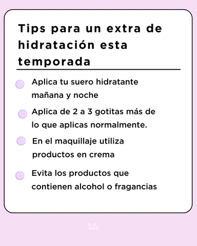
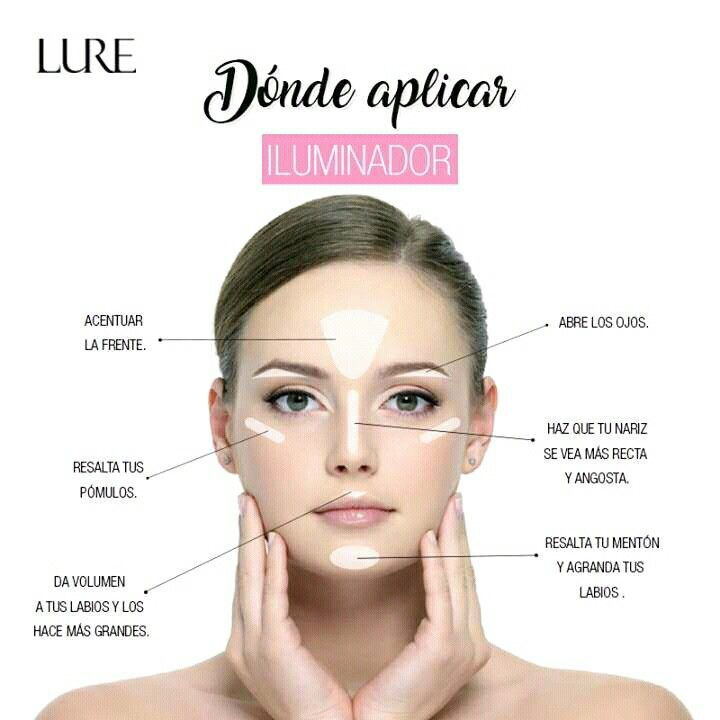

CONSEJOS PROFESIONALES PARA UN MAQUILLAJE IMPECABLE
LOGRAR UN MAQUILLAJE PERFECTO NO SIEMPRE REQUIERE PRODUCTOS COSTOSOS, SINO CONOCER TU ROSTRO, LOS PRODUCTOS ADECUADOS Y LAS TÉCNICAS CORRECTAS. AQUÍ TE COMPARTIMOS ALGUNOS TIPS BÁSICOS Y PROFESIONALES QUE TE AYUDARÁN A POTENCIAR TU BELLEZA NATURAL EN CUALQUIER OCASIÓN.
- HIDRATA TU ROSTRO: ANTES DE APLICAR MAQUILLAJE, UTILIZA UNA BUENA CREMA HIDRATANTE PARA MEJORAR LA TEXTURA Y DURACIÓN DEL PRODUCTO.
- USA PRIMER: EL PRIMER AYUDA A CERRAR POROS Y HACE QUE EL MAQUILLAJE SE ADHIERA MEJOR A LA PIEL.
- ILUMINA TUS PUNTOS CLAVE: APLICA ILUMINADOR EN ZONAS ESTRATÉGICAS COMO EL PUENTE DE LA NARIZ, PÓMULOS Y ARCO DE CUPIDO PARA DARLE LUZ AL ROSTRO.
- FIJA TU MAQUILLAJE: USA SPRAY FIJADOR PARA MANTENER TU LOOK INTACTO DURANTE HORAS, ESPECIALMENTE EN EVENTOS LARGOS.

